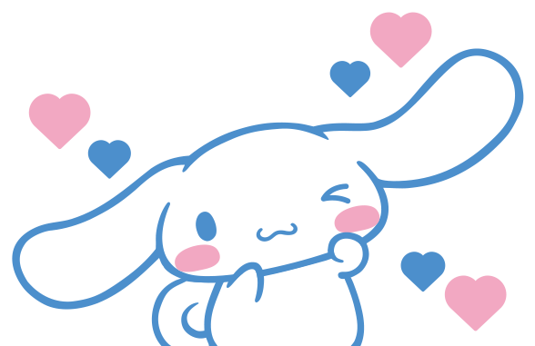
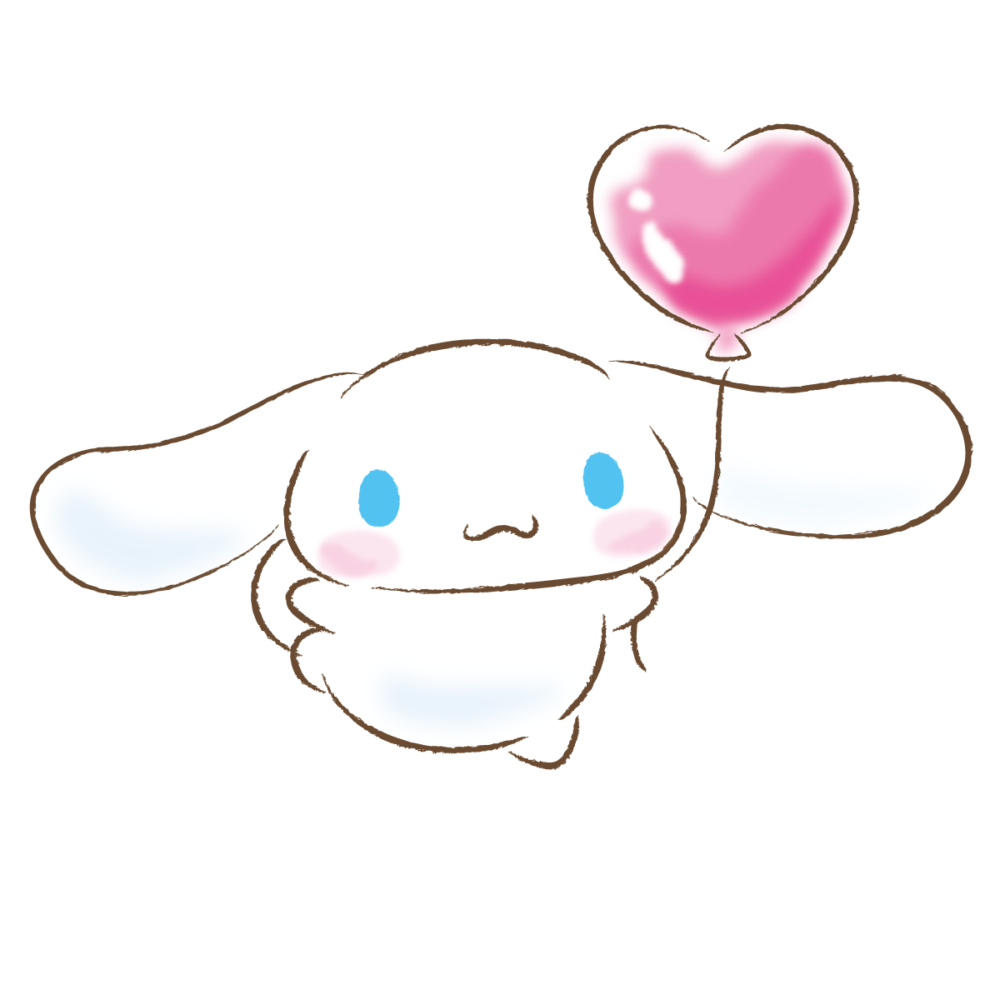

Querida Ari ❤️,
Aunque este 14 la distancia nos gane por un ratito, no quería que el día pasara sin recordarte lo especial que eres para mí. Escribo esto porque hay algo que quiero decirte, algo que me hace mucha ilusión... Te tengo una sorpresa.
Aunque este 14 la distancia nos gane por un ratito, no quería que el día pasara sin recordarte lo especial que eres para mí. Escribo esto porque hay algo que quiero decirte, algo que me hace mucha ilusión... Te tengo una sorpresa.
De, Ronald

Razones por la cual eres mi eleccion perfecta mi amor
1. Eres el sueño del que nunca quiero despertar . ❤️
2. Eres mi lugar seguro. ❤️
3. Segundos a tu lado valen mas que una eternidad. ❤️
4. Porque eres mi primer pensamiento al despertar y el último al
dormir. ❤️
5. No imagino a nadie más a mi lado. ❤️
6. Eres mi elección favorita en esta y en todas las vidas. ❤️

Señales para decir "SÍ" mi vida
Si cada vez que hablamos el mundo se detiene, es por algo.
Si sabes que incluso a la distancia somos el mejor equipo del mundo.
Si sientes que nadie te va a cuidar tanto como yo, es porque es
verdad.
Si sientes que este amor no es casualidad, sino nuestro mejor acierto.
Si no puedes evitar sonreír ahora mismo... ya tienes tu respuesta.

¿Quieres ser mi San Valentín?


.jpeg)
¡CONFIRMADO!
A
+
R
Gracias por decir que sí mi amor. La distancia solo hace que nuestro amor sea mas fuerte. Cuento los días para estar a tu lado.